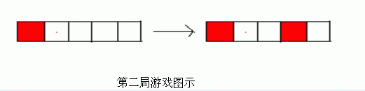

第一行一个数time，表示数据组数。
接下来每组数据的第一行两个数n，k如题中所述，第二行n个0到k的整数，0表示格子未染色，否则表示该格子的颜色。
保证初始局面没有两个相邻格子同色。
NG.in
2
5 2
0 0 1 0 0
5 1
1 0 0 0 0
n
y
第一局游戏中局面是对称的，所以只要先手可以给格子染色，后手就可以给其对称的格子染色，故后手必胜。
第二局游戏中，先手给第4个格子染色后，后手就不能染色了，故先手必胜。

对于100%的数据 1≤n≤105